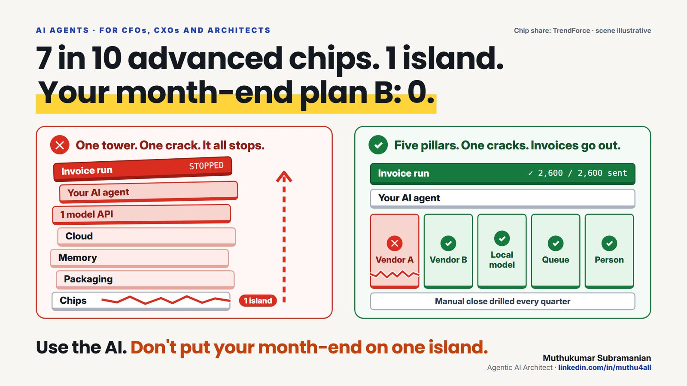

Your AI Agent Has a Single Point of Failure. It Isn't in Your Code.
By Muthukumar Subramanian · Agentic AI Architect

It's 4:10 PM on the last working day of the month.
Jignesh, finance controller at a tiles exporter in Morbi, has 2,600 invoices to raise before midnight. The AI invoice agent has done 1,140 of them since morning. Then it slows to a crawl.
No bug. No deploy. Nothing in their code changed. The model vendor's status page says "capacity constrained, please retry". Somewhere far away, demand for AI chips has outrun supply, the vendor is rationing, and a tiles company in Gujarat is near the back of that line.
Jignesh asks the obvious question: "Can we do the rest by hand?"
The two people who used to raise invoices manually moved to other roles in March. Nobody has the steps written down.
(Jignesh, the company and every number in this scene are illustrative. The question isn't.)
What got me thinking
A couple of weeks ago I saw a news item about AI causing a shortage of circuit boards. Then I started listing what AI is pulling towards a few places: chips, memory, board materials, silver, power, water, capital.
My first reaction wasn't "AI uses too much". It was an architect's reaction.
Here's my contrarian claim: the risk isn't how much AI consumes. It's how few places it depends on.
Draw it as a stack
Put the stack your invoice agent stands on, from the bottom up, on a whiteboard:
→ Chips. About 71% of the world's most advanced chip capacity (7 nm and below) was in Taiwan in 2024, according to TrendForce. Older counts put it above 90%. New fabs in Arizona and Japan will bring it down, slowly.
→ Memory. A handful of companies make almost all of it. TrendForce says conventional DRAM contract prices rose about 93–98% in a single quarter, Q1 2026.
→ Boards and metals. AI server boards need a special low-loss glass cloth that comes mainly from one Japanese supplier, Nittobo, and trade press says its big expansion lands around 2027. The Silver Institute forecasts a sixth straight year of silver deficit in 2026. Solar uses far more silver than data centres, but AI is a growing buyer.
→ Power. The IEA expects data centres to use about 945 TWh by 2030, more than double 2024 and roughly what Japan uses today.
→ Capital. Amazon, Alphabet, Microsoft and Meta have guided over $700 billion of capital spending for 2026, most of it for AI.
→ Model vendors. A handful of labs serve most of the frontier models.
→ Your agent. Usually wired to one API.
→ Your month-end. Sitting right at the top.
Every layer has a few suppliers. No layer has a fallback. And the most valuable thing, your cash, sits on top of all of it.
Bring that diagram to any design review and the architect fails it in five minutes. We'd never accept one database with no replica. Yet that's how most companies are wiring AI into finance.
👉 [IMAGE: C-single-point-of-failure-2-in-article-chokepoint-stack.png]
Caption: The stack your invoice agent stands on. A crack anywhere climbs to the top. Figures from TrendForce, the Silver Institute, the IEA and company guidance.
Why this reaches India first as a price
We import most of this stack. Micron's packaging plant in Sanand started production in early 2026, which is real progress, but leading-edge chips and most memory still come from abroad.
So shortages reach us as prices. A TechArc study reported by Business Standard found that phones under ₹10,000 got 17.6% dearer on average in the first five months of 2026, mainly because of memory costs. Laptop makers have raised prices too. Today it's your phone. Tomorrow it could be the cloud bill your agent runs on, or the capacity it's allowed to use.
You can't fix Taiwan. You can fix the top two layers.
Nobody reading this can change DRAM prices. But every CFO can ask one question:
If the model is down or rationed on the last day of the month, can we still close the books?
If the answer is "we'd figure it out", here's the plan-B ladder I'd put in place. Each rung catches what the one above drops.
→ 1. A second model vendor behind your gateway. Same prompts, tested evals, and a switch someone has actually flipped. I wrote about the gateway in "One AI Agent. One Bad Loop. ₹6 Lakh Gone by Morning."
→ 2. A small model on your own machine. Routine invoices don't need a frontier model. Open models like Llama, Mistral, Gemma or Qwen can run on a laptop or a local server. That was the point of "Not Every Prompt Deserves a Data Centre."
→ 3. A queue, so nothing is lost while you wait. Hard cases wait and resume when capacity returns. More in "The Model API Went Down at Month-End. Where Did 12,000 Invoices Go?"
→ 4. A person who can still do it by hand. With the steps written down, and a manual close drill every quarter, so the skill doesn't quietly disappear.
A fallback you've never tested is a hope, not a plan.
👉 [IMAGE: C-single-point-of-failure-3-in-article-plan-b-ladder.png]
Caption: The plan-B ladder. Four rungs, what each costs, and how to test it. Screenshot it for your next BCP review.
👉 [GIF: C-single-point-of-failure-4-in-article-plan-b.gif]
Caption: One crack at the bottom stops the invoice run at the top. With a plan B, the run falls back to a local model, a queue and a person, and the invoices still go out. Illustrative.
Who owns plan B?
Two newer roles fit here. The titles are still settling.
An AgentOps engineer runs agents in production the way an SRE runs services. They own the fallbacks, watch for rationing, and run outage drills like fire drills.
A forward deployed engineer (FDE), an engineer who works inside the customer's team to ship the agent on their real systems, knows exactly which manual process the agent replaced. That knowledge is rung 4. Write it down before it walks out of the door.
What I might be wrong about
→ Shortages end. High prices pull in new capacity. The 2021 chip shortage cost car makers millions of vehicles, and by mid-2023 S&P Global Mobility said it was mostly over for the auto industry. So I'm arguing fragility, not collapse.
→ This isn't anti-AI. I'm not saying slow down. I'm saying build it like an architect.
→ Diversifying costs money. A second vendor means a second set of prompts, evals and contracts. A local model is less accurate on hard cases. Most companies won't pay for plan B until the first bad month-end.
→ Manual skills fade anyway. A drill once a quarter keeps the steps alive, but it's still a cost in people's time.
The opportunity
→ For CFOs and CXOs: add "AI continuity" to your business continuity plan, the same way your ERP has disaster recovery.
→ For IT services firms and consultants: AI continuity audits. Map every agent to the stack beneath it, its fallback and its last drill.
→ For founders: tools that switch vendors cleanly, run small models locally for routine work, and run outage drills automatically.
→ For engineers and students: AgentOps. Someone has to own plan B.
Use the AI. Just don't put your month-end on one island.
Your turn 👇
If your AI model went down on the last day of this month, could your team still close the books by hand? Yes or no.
Tag the person in your finance team who still remembers how to do it manually.